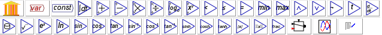
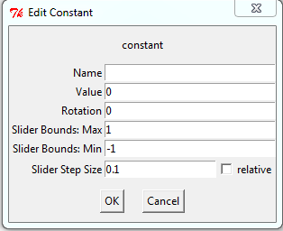
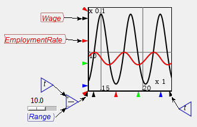
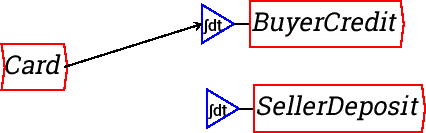

These are the ``nuts and bolts'' of any system dynamics program. The number of icons will grow over time, but the key ones are implemented now:
 . This is the
fundamental element of Minsky that is not found (yet) in any other
system dynamics program.
. This is the
fundamental element of Minsky that is not found (yet) in any other
system dynamics program.
Clicking on it and placing the resulting Bank Icon on the Canvas enters a bank into your model:

Double-click on the Bank Icon (or right-click and choose ``Open Godley Table'' from the menu) and you get a double-entry bookkeeping table we call a Godley Table:

Use this table to enter the bank accounts and financial flows in your model. We discuss this later in the Tutorial (Monetary).
 . This creates an entity
whose value changes as a function of time and its relationship with
other entities in your model. Click on it and a variable definition
window will appear:
. This creates an entity
whose value changes as a function of time and its relationship with
other entities in your model. Click on it and a variable definition
window will appear:

The only essential step here is providing a name for the Variable. You can also enter a value for it (and a rotation in degrees), but these can be omitted. In a dynamic model, the value will be generated by the model itself.
When you click on OK (or press Enter), the newly named variable will appear in the top left hand corner of the Canvas. Move the mouse cursor to where you want to place the variable on the Canvas, click, and it will be placed in that location.

The only essential elements here are the constant's name, and its value. You can also specify its rotation on the Canvas in degrees, and its parameters if you make the slider active. This lets you vary a parameter while a simulation is running--which is useful if you wish to explore a range of policy options while a model is running.
A constant is just a type of variable, which also include parameters (named constants), flow variables, stock variables and integration variables.
 embeds a reference to the
simulation time on the Canvas. This is not necessary in most
simulations, but can be useful if you want to make a time-dependent
process explicit, or control the appearance of a graph.
embeds a reference to the
simulation time on the Canvas. This is not necessary in most
simulations, but can be useful if you want to make a time-dependent
process explicit, or control the appearance of a graph.
For example, by default a graph displays the simulation time on the horizontal axis, so that cycles get compressed as a simulation runs for a substantial period:

If a Time block is added to the marker for the x-axis range, you can control the number of years that are displayed. This graph is set up to show a ten year range of the model only:

 . This inserts a variable whose value depends on the integral of other
variables in the system. This is the essential element for defining
a dynamic model. Click on it and the following entity will appear at
the top left hand side of the canvas (and move with your mouse until
you click to place it somewhere:
. This inserts a variable whose value depends on the integral of other
variables in the system. This is the essential element for defining
a dynamic model. Click on it and the following entity will appear at
the top left hand side of the canvas (and move with your mouse until
you click to place it somewhere:

``int'' is short for ``integrated variable'', and the first thing you should do after creating one is give it a name. Double-click on the ``int'', or right click and choose Edit. This will bring up the following menu:

Change the name to something appropriate, and give it an initial value. For example, if you were building a model that included America's population, you would enter the following:

The integrated variable block would now look like this:

To model population, you need to include a growth rate. According to Wikipedia, the current US population growth rate is 0.97 percent per annum. Expressed as an equation, this says that the annual change in population, divided by its current level, equals 0.0097:
To express this as an integral equation, firstly we multiply both sides of this equation by Population to get:
Then we integrate both sides to get an equation that estimates what the population will be T years into the future as:
Here, 315 (million) equals the current population of the USA, the year zero is today, and  is some number of years from today. The same equation done as a flowchart looks like this:

Or you can make it look more like the mathematical equation by right-clicking on ``Population'' and choosing ``Copy Var''. Then you will get another copy of the Population variable, and you can wire up the equation this way:

Either method can be used. I prefer the latter because it's neater, and it emphasizes the link between the simple formula for a percentage rate of change and a differential equation.
 . These execute the stated binary
mathematical operations. Each input can take multiple wires as
well--so that to add five numbers together, you can wire 1 input
to one port on the Add block, and the other four to the other
port.
. These execute the stated binary
mathematical operations. Each input can take multiple wires as
well--so that to add five numbers together, you can wire 1 input
to one port on the Add block, and the other four to the other
port.